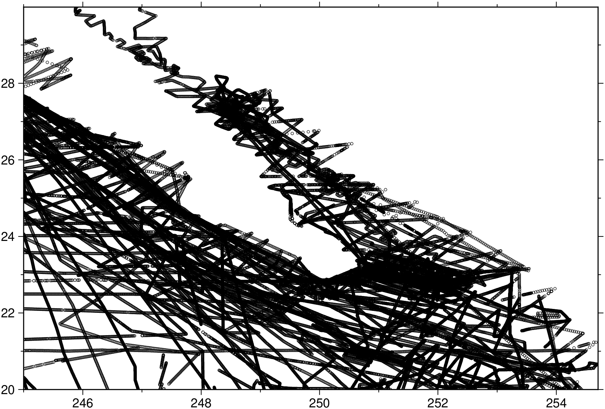

using GMT
gmtinfo("@ship_15.txt")1-element Vector{String}:
"C:/Users/j/.gmt/cache/ship_15.t" ⋯ 21 bytes ⋯ "4.705>\t<20/29.99131>\t<-4504/-9>"
Find the extreme values in data tables.
gmtinfo reads GMTdataset [or from files] and finds the extreme values in each of the columns reported as slash-separated min/max pairs. It recognizes NaNs and will print warnings if the number of columns vary from record to record. The pairs can be split into two separate columns by using the numeric option. As another option, gmtinfo can find the extent of data in the first two columns rounded up and down to the nearest multiple of the supplied increments given by inc. Such output will be in the text form -Rw/e/s/n, which can be used directly on the command line for other modules (hence only dx and dy are needed). If numeric is combined with inc then the output will be in column form and rounded up/down for as many columns as there are increments provided in inc. A similar option (nearest_multiple) will provide a -Tzmin/zmax/dz string for makecpt.
table One or more data tables (file name, GMTdataset, or matrix). When using file nmaes, and want to apply to more than one, arg1 can be a tuple or vector of file names.
A | ranges : – ranges=:a | ranges=:t | ranges=:s
Specify how the range should be reported. Choose ranges=:a for the range of all tables combined, ranges=:t to report the range for each table separately, and ranges=:s to report the range for each segment (in multisegment tables) separately. [Default is ranges=:a].
C | numeric | per_column : – numeric=true
Report the min/max values per column in separate columns [Default uses
D | center : – center=true | center=(dx, dy)
Modifies results obtained by inc by shifting the region to better align with the center of the data. Optionally, append granularity for this shift [Default performs an exact shift].
E | get_record : – get_record=:l | get_record=:h | get_record=:L | get_record=:H | get_record=“l5”
Returns the record whose column col contains the minimum (l) or maximum (h) value. Upper case (L|H) works on absolute value of the data. In case of multiple matches, only the first record is returned. If col is not specified we default to the last column in the data.
F | counts : – counts=:i | counts=:d | counts=:t
Returns the counts of various records depending on the appended mode: i returns a single record with the total number of tables, segments, data records, header records, and overall records. In contrast, d returns information for each segment in the virtual data set: tbl_number, seg_number, n_rows, start_rec, stop_rec. Mode t does the same but honors the input table organization and thus resets seg_number, start_rec, stop_rec at the start of each new table [Default is i].
I | inc | increment | spacing : – inc=val | inc=(dx, dy) | inc=(exact=true, inc=val) | inc=(surface=true, inc=val) | inc=(fft=true, inc=val) | inc=(polyg=true,)
Compute the min/max values of the first n columns to the nearest multiple of the provided increments (separate the n increments by slashes) [default is 2 columns]. By default, output results in the string -Rw/e/s/n or -Rxmin/xmax/ymin/ymax, unless numeric is set in which case we output each min and max value in separate output columns. Several directives are available:
L | common_limits : – common_limits=true
Determines common limits across tables (ranges=:t) or segments (ranges=:s). If used with inc it will round inwards so that the resulting bounds lie within the actual data domain.
T | nearest_multiple : – nearest_multiple=dz | nearest_multiple=(dz=val, col=n)
Report the min/max of the first (0’th) column to the nearest multiple of dz and output this as the string -Tzmin/zmax/dz. To use another column, append col=n. Cannot be used together with inc. Note: If your column has absolute time then you may append a valid fixed time unit to dz (i.e., choose from week, day, hour, minute, or second).
V or verbose : – verbose=true | verbose=level
Select verbosity level. More at verbose
a or aspatial : – aspatial=??
Control how aspatial data are handled in GMT during input and output. More at
bi or binary_in : – binary_in=??
Select native binary format for primary table input. More at
di or nodata_in : – nodata_in=??
Substitute specific values with NaN. More at
e or pattern : – pattern=??
Only accept ASCII data records that contain the specified pattern. More at
f or colinfo : – colinfo=??
Specify the data types of input and/or output columns (time or geographical data). More at
g or gap : – gap=??
Examine the spacing between consecutive data points in order to impose breaks in the line. More at
h or header : – header=??
Specify that input and/or output file(s) have n header records. More at
i or incol or incols : – incol=col_num | incol=“opts”
Select input columns and transformations (0 is first column, t is trailing text, append word to read one word only). More at incol
o or outcol : – outcol=??
Select specific data columns for primary output, in arbitrary order. More at
r or reg or registration : – reg=:p | reg=:g
Select gridline or pixel node registration. Used only when output is a grid. More at
s or skiprows or skip_NaN : – skip_NaN=true | skip_NaN=“<cols[+a][+r]>”
Suppress output of data records whose z-value(s) equal NaN. More at
w or wrap or cyclic : – wrap=??
Convert input records to a cyclical coordinate. More at
yx : – yx=true
Swap 1st and 2nd column on input and/or output.
To find the extreme values in the remote file @ship_15.txt:
1-element Vector{String}:
"C:/Users/j/.gmt/cache/ship_15.t" ⋯ 21 bytes ⋯ "4.705>\t<20/29.99131>\t<-4504/-9>"
Output should look like:
ship_15.txt: N = 82651 <245/254.705> <20/29.99131> <-4504/-9>To find the extreme values in @ship_15.txt to the nearest 5 units but shifted to within 1 unit of the data center, and use this region to plot all the points as small black circles:

To find the min and max values for each of the first 3 columns, but rounded to integers, and return the result individually for each data file:
1×6 GMTdataset{Float64, 2}
Row │ col.1 col.2 col.3 col.4 col.5 col.6
─────┼────────────────────────────────────────────
1 │ 245.0 255.0 20.0 30.0 -4504.0 -9.0The file magprofs.txt contains a number of magnetic profiles stored as separate data segments. We need to know how many segments there are:
The inc option does not yet work properly with time series data (e.g., incols="0T"). Thus, such variable intervals as months and years are not calculated. Instead, specify your interval in the same units as the current setting of TIME_UNIT.
This function has multiple methods:
gmtinfo(cmd0::String; kwargs...) - gmtinfo.jl:44gmtinfo(arg1; kwargs...) - gmtinfo.jl:45